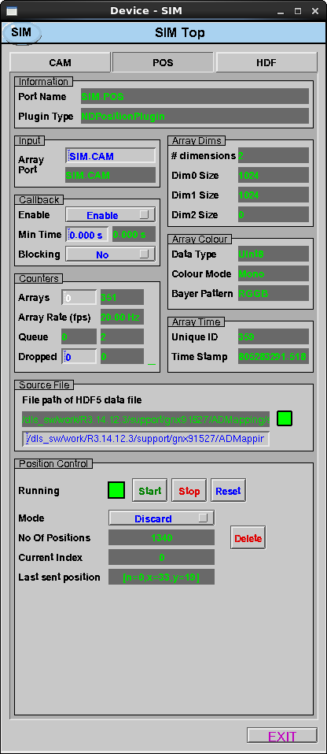

NDPosPlugin can be used to attach positional information to NDArrays in the form of NDAttributes. This plugin accepts an XML description of the position data and then attaches each position to NDArrays as they are passed through the plugin. Each position can contain a set of index values and each index is attached as a separate NDAttribute. The plugin operates using a FIFO and new positions can be added to the queue while the plugin is actively attaching position data. When used in conjunction with the HDF5 writer (NDFileHDF5) it is possible to store NDArrays in an arbitrary pattern within a multi-dimensional dataset.
The NDPosPlugin plugin is created with the NDPosPluginConfigure command, either from C/C++ or from the EPICS IOC shell.
NDPosPluginConfigure (const char *portName, int queueSize, int blockingCallbacks,
const char *NDArrayPort, int NDArrayAddr, size_t maxMemory,
int priority, int stackSize)
For details on the meaning of the parameters to this function refer to the detailed documentation on the NDPosPluginConfigure function in the NDPosPlugin.cpp documentation and in the documentation for the constructor for the NDPosPlugin class.
The position data is supplied to the plugin as an XML description. The parameter NDPos_Filename can either accept the full path to an XML file with the position data description, or the XML can be injected directly into the parameter. There is a 1,000,000 byte limit on the parameter, but multiple injections can take place in sequence with each set of points appended to the FIFO.
The XML definition contains the following 4 main elements: dimensions, dimension, positions, and position.
The XML can contain any number of dimension elements (grouped within the dimensions element), and each dimension must contain a single attribute name that names the particular dimension. Once the dimensions have been defined, the position elements are added. The XML can contain any number of position elements (grouped within the positions element). Each position element should have an attribute for each of the named dimensions with the value of the position for that dimension. An example of a simple XML description is presented below:
<pos_layout>
<dimensions>
<dimension name="x"></dimension>
<dimension name="y"></dimension>
<dimension name="z"></dimension>
</dimensions>
<positions>
<position x="0" y="0" z="0"></position>
<position x="0" y="0" z="1"></position>
<position x="0" y="1" z="0"></position>
<position x="0" y="1" z="1"></position>
<position x="1" y="0" z="0"></position>
<position x="1" y="0" z="1"></position>
<position x="1" y="1" z="0"></position>
<position x="1" y="1" z="1"></position>
</positions>
</pos_layout>
In the example above, three dimensions have been defined (x, y and z). The positions are then defined with value for each dimension provided. This XML description will result in three NDAttriubtes being attached to each NDArray, with the names x, y and z respectively. The value of each of the NDAttributes will be set according to the position that is currently at the front of the FIFO.
A complete example XML layout file is provided in "ADCore/iocBoot/pos_plugin_demo.xml".
An XML schema is provided in "ADCore/iocBoot/pos_plugin_schema.xsd". The schema defines the syntax that is allowed in the user's XML definition. It can also be used with the 'xmllint' command to validate a user's XML definition:
xmllint --noout --schema ADCore/iocBoot/pos_plugin_schema.xsd /path/to/users/layout.xml
The plugin offers two modes of operation: Discard and Keep. When executed in discard mode the plugin will throw away a position every time it is attached to an NDArray, and the FIFO will continue to decrease in size until it reaches zero. When executed in Keep mode the positions will still be sent in order but they will not be discarded. A parameter can be used to reset the current position to the start and then the same set can be reused. The position attachment can be started and stopped, and the FIFO can be cleared. A record of the number of positions in the FIFO, the current index and a string representation of the last position sent are provided through the parameter interface.
The plugin tracks frame information to ensure that the incoming frames are in the correct order and there are no missing or duplicated frames. This is achieved using three parameters, IDName, IDStart and IDDifference. The IDName tells the plugin which incoming attribute to use as the ID to track, or if it is left empty then the uniqueId member variable of the NDArray is used. The IDStart value informs this plugin of the first expected ID when the acquisition is started, and the IDDifference informs this plugin of the expected delta ID between each frame. An IDStart of 5 and IDDifference of 10 would result in the plugin expecting the following sequence of ID values attached to the incoming frames: 5,15,25,35... If incoming frames contain IDs that are greater than the expected ID then the plugin will print a warning and throw away any position information up until the expected ID matches the frame ID; this is a case where the frames are assumed to have been dropped. If incoming frames contain IDs that are less than the exptected ID then the plugin will print an error and drop the frames until the incoming frame ID matches the expected ID. This is a more serious case of the plugin dropping frames and this is why the error is printed. In both of these error situations the plugin will record the event into the corresponding counter and continue to process frames.
| Parameter Definitions and EPICS Record Definitions in NDPosPlugin.template | ||||||
| Parameter index variable | asyn interface | Access | Description | drvInfo string | EPICS record name | EPICS record type |
|---|---|---|---|---|---|---|
| XML Position Definition | ||||||
| NDPos_Filename | asynOctet | r/w |
XML filename, pointing to an XML position set description This waveform also supports loading raw XML code directly; up to a maximum of 1,000,000 Bytes long (NELM=1,000,000). |
NDPos_Filename |
$(P)$(R)FileName $(P)$(R)FileName_RBV |
waveform |
| NDPos_FileValid | asynInt32 | r/o | Flag to report the validity (xml syntax only) of the loaded XML. Updated when the NDPos_Filename is updated with a new filename. | NDPos_FileValid | $(P)$(R)FileValid_RBV | bi |
| Execution | ||||||
| NDPos_Running | asynInt32 | r/w | Start or stop appending of position data to NDArrays. | NDPos_Running |
$(P)$(R)Running $(P)$(R)Running_RBV |
busy bi |
| NDPos_Restart | asynInt32 | r/w | Reset the current position index to zero (front of FIFO) when executing in Keep mode. Has no effect if executing in Discard mode. | NDPos_Restart | $(P)$(R)Reset | bo |
| NDPos_Delete | asynInt32 | r/w | Delete any position data in the FIFO. If the plugin is running then this will stop the plugin. The size and current index will both be set to zero. | NDPos_Delete | $(P)$(R)Delete | bo |
| NDPos_Mode | asynInt32 | r/w | Select the mode of operation, Discard or Keep. Discard mode throws away each position once it has been attached to an NDArray, whereas Keep mode keeps the value and traverses through the FIFO, reatining all position data. | NDPos_Mode |
$(P)$(R)Mode $(P)$(R)Mode_RBV |
bo bi |
| NDPos_IDName | asynOctet | r/w | Use this attribute name for the incoming frame IDs. If this parameter is left empty then the incoming frame's uniqueId is used for the index count. | NDPos_IDName |
$(P)$(R)IDName $(P)$(R)IDName_RBV |
stringout stringin |
| NDPos_IDStart | asynInt32 | r/w | When a new acquisition is started this value is the expected ID for the first processed frame. | NDPos_IDName |
$(P)$(R)IDStart $(P)$(R)IDStart_RBV |
longout longin |
| NDPos_IDDifference | asynInt32 | r/w | This value represents the delta ID between each processed frame, and is useful is frames are processed by plugins before reaching this plugin (eg integration of several frames into one). If the start ID is set to 1 and this parameter is set to 2 then the expected IDs would be 1,3,5,7,9.... | NDPos_IDDifference |
$(P)$(R)IDDifference $(P)$(R)IDDifference_RBV |
longout longin |
| Information | ||||||
| NDPos_CurrentQty | asynInt3264 | r/o | Current number of position points in the FIFO. | NDPos_CurrentQty | $(P)$(R)Qty_RBV | longin |
| NDPos_CurrentIndex | asynInt32 | r/o | Current index of pointer to position within FIFO (0 for Discard mode). | NDPos_CurrentIndex | $(P)$(R)Index_RBV | longin |
| NDPos_CurrentPos | asynOctet | r/o | String representation of the last position to be attached to an NDArray. | NDPos_CurrentPos | $(P)$(R)Position_RBV | stringin |
| NDPos_MissingFrames | asynInt32 | r/w | Counter of the number of missed/dropped frames. Write a 0 to the parameter to reset. | NDPos_MissingFrames |
$(P)$(R)Missing $(P)$(R)Missing_RBV |
longout longin |
| NDPos_DuplicateFrames | asynInt32 | r/w | Counter of the number of duplicated frames. Write a 0 to the parameter to reset. | NDPos_DuplicateFrames |
$(P)$(R)Duplicate $(P)$(R)Duplicate_RBV |
longout longin |
